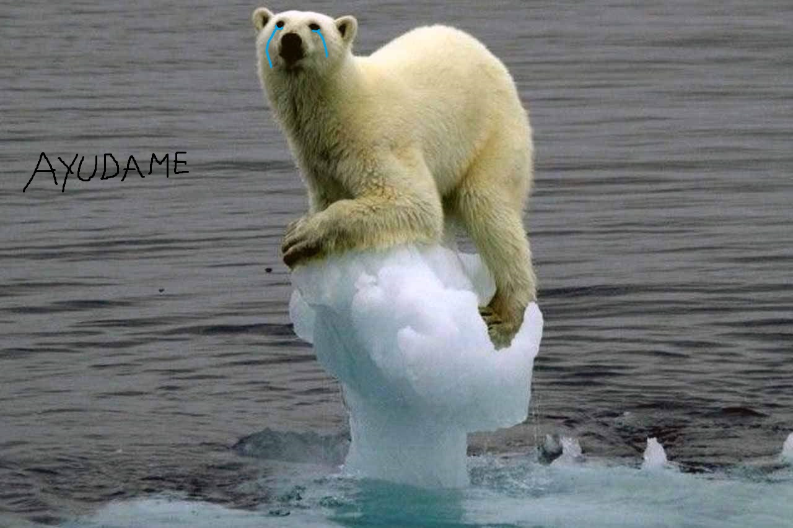
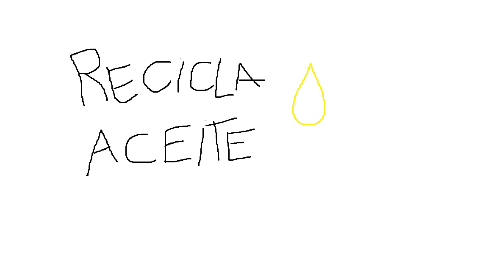
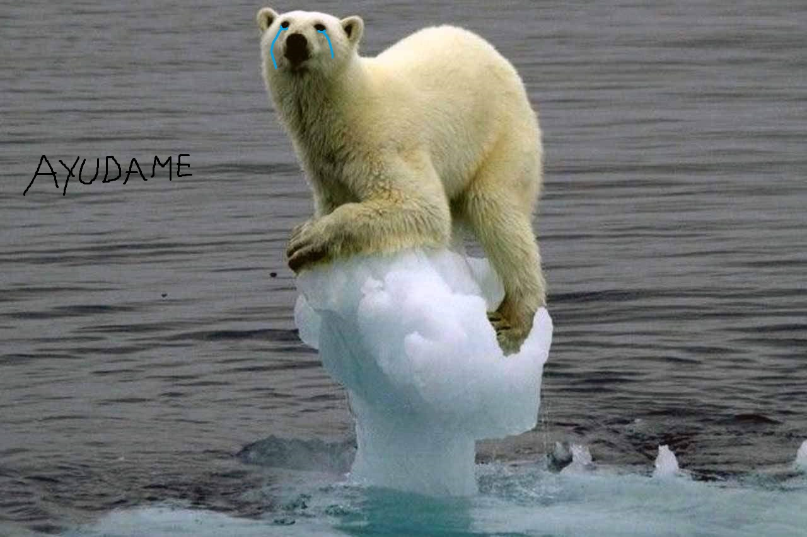
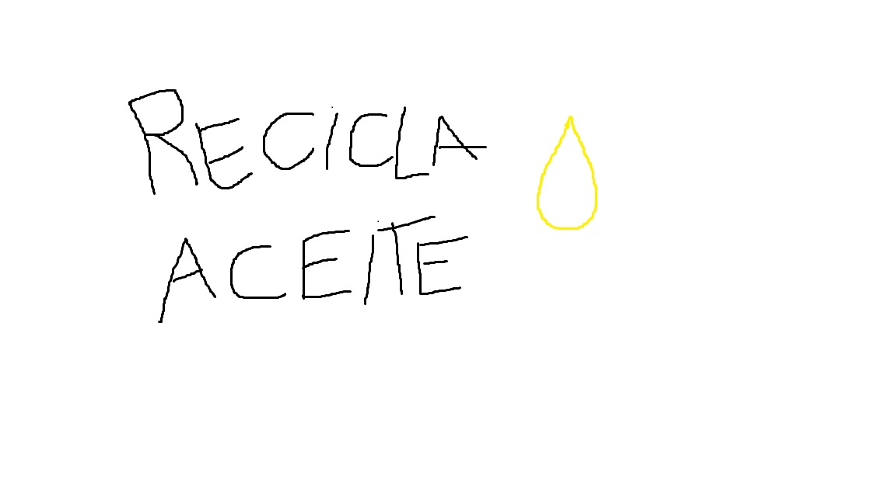

En 2050 podrían haber el doble de muertes prematuras por contaminación
La mortalidad prematura por contaminación del aire podría
duplicarse para 2050, alcanzando 6,6 millones de muertes
anuales, según un estudio de la revista Nature dirigido por
Jos Lelieveld del Instituto Max Planck de Química. El
análisis indica que el ozono y las partículas finas son
los contaminantes más peligrosos, especialmente en áreas
urbanas donde las emisiones de cocinas y calefacción
tienen un gran impacto. La agricultura, especialmente en
Europa, Estados Unidos, Rusia y el este de Asia, es la
segunda causa de mortalidad por contaminación, debido a
los fertilizantes. Las emisiones del tráfico y de las
plantas de energía también contribuyen significativamente.
No obstante, los investigadores enfrentan dificultades para
cuantificar globalmente los efectos de la contaminación, ya
que la calidad del aire no se mide en todas las regiones y
la toxicidad de las partículas varía según su origen. A
pesar de esto, han observado mejoras en la calidad del aire
en Europa y Estados Unidos en los últimos años, atribuibles
a la legislación medioambiental, lo que ha beneficiado la
salud pública.